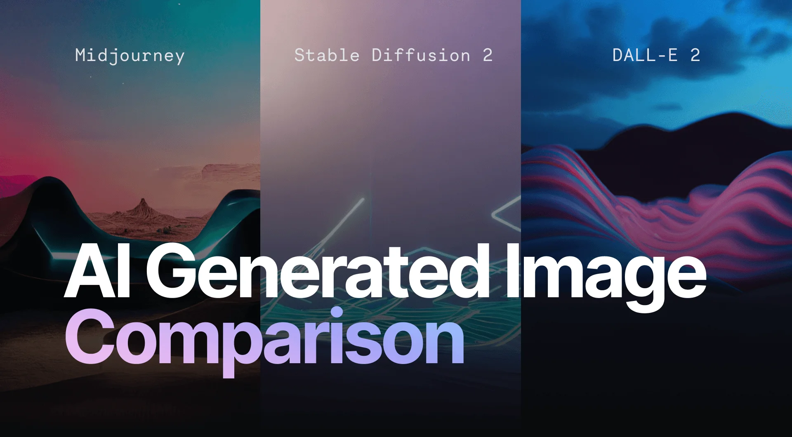
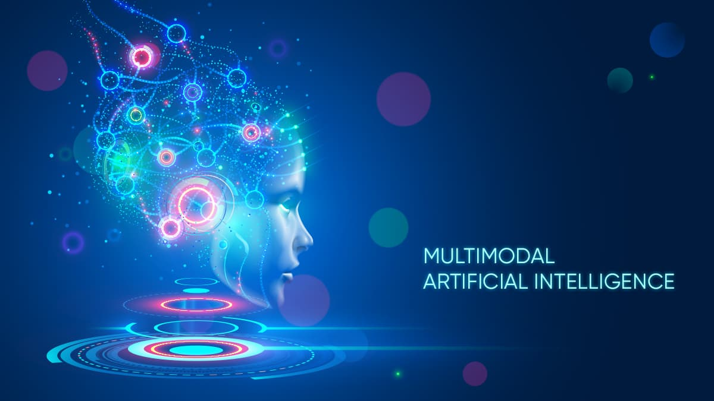

How AI Has Evolved

🧠 Stage 1: Symbolic AI (1950s–70s)
AI started with logic-based reasoning where humans created rules for machines.
📘 Stage 2: Expert Systems (1980s)
Rule-based systems that mimicked expert decisions in medicine and finance.

📊 Stage 3: Machine Learning (1990s)
Machines learned patterns using algorithms instead of handwritten rules.

🔗 Stage 4: Neural Networks (2000s)
Increased computational power revived neural networks with high accuracy.
💡 Stage 5: Deep Learning (2012)
AlexNet revolutionized computer vision and made deep learning mainstream.
⚡ Stage 6: Transformers (2017)
Attention-based architecture enabled powerful language understanding.

📝 Stage 7: LLMs (2020+)
Models like GPT learned from billions of words and can generate human-like content.

🎨 Stage 8: Diffusion Models
Text-to-image models like DALL·E & SD create realistic images from prompts.

🌐 Stage 9: Multimodal AI
AI systems that understand text, images, video, audio together.
🚀 Stage 10: Toward AGI
AI is moving toward reasoning, autonomy, and general human-like intelligence.